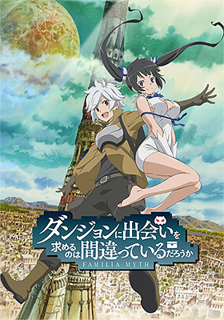

Description
Commonly known as the "Dungeon", the city of Orario possesses a huge labyrinth in the underground. Its strange name attracts excitement, illusions of honor, and hopes of romance with a pretty girl. In this city of dreams and desires, new adventurer Bell Cranel has his fateful encounter with the tiny Goddess Hestia.
Thus begins the story of a boy striving to become the best adventurer and a lonely goddess searching for followers both working together to fulfill their goals.
Genre
Action, Adventure, Comedy, Fantasy, Romance
Relevant Information
Bla Bla